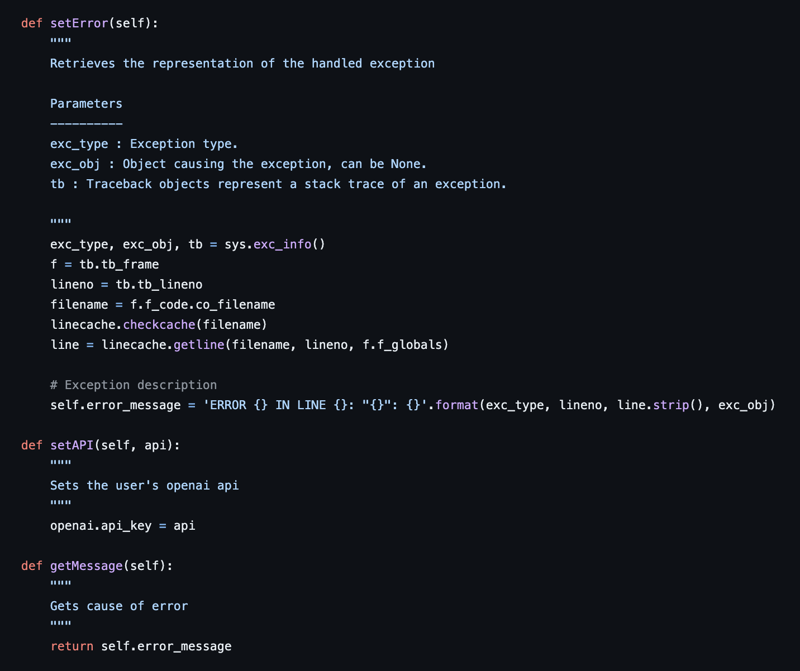

Codebug is a pip-installable Python package that replaces pandas's wall-of-red tracebacks with a short, plain-language explanation of what went wrong — so first-time programmers spend their energy on the bug, not on parsing the error.
Why
As a TA, I watched the same scene over and over: a student hit a pandas error, froze when they saw the bold red stack trace, and re-ran the same code without changing it. The vocabulary of Python's tracebacks — NoneType, unhashable, iterable, sliceable — is a real barrier for people who learned the language two weeks ago. The fix wasn't to make errors less informative; it was to translate them.
How it works
Codebug intercepts the pandas error message, sends it to GPT-3.5 with a small instruction prompt, and prints back a digestible explanation plus practical suggestions for fixing the code. The result tries to do three things at once:
- Encourage the student to actually read the error.
- Clear up the underlying Python / pandas misconception (e.g. "this is a Series, not a DataFrame").
- Offer concrete next steps instead of just naming the exception class.
pip install Codebugger
Caveats
The package was built in early 2023 against the OpenAI API as it existed then — anyone trying it today will want to bump the model and replace any deprecated endpoints. The hardest design call wasn't technical; it was figuring out how much of the original traceback to keep alongside the plain-language version, since hiding it entirely teaches students to fear errors instead of read them.
Built while TA'ing intro data science at UC San Diego. Repo: github.com/gabrielchasukjin/codebug.